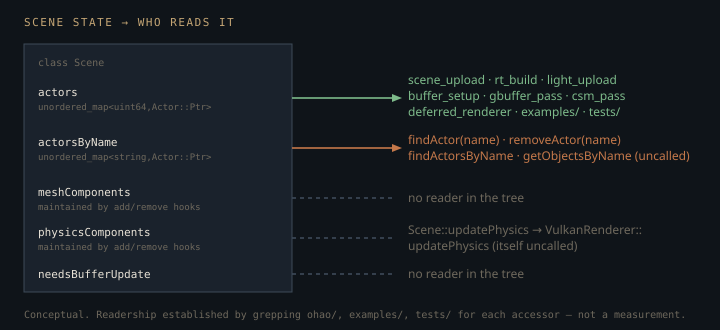

Monograph · Tree · ← Module hub · Scene API
scene
Scene API
createActor, lookup, tags, physics world ownership, serialize hooks.
What "in the scene" actually means
Every pass that needs geometry begins at one accessor — the id-keyed actor map:
[[nodiscard]] const ActorMap& getAllActors() const noexcept { return actors; }ohao/scene/scene.hpp:70Vertex/index upload, RT BLAS and TLAS construction, light-buffer assembly, the GBuffer draw loop, CSM shadow culling and the deferred renderer's brightest-light search each iterate that `unordered_map` themselves and interrogate every actor for the component they care about, rather than reading any pre-built list:
if (meshComponent && meshComponent->getModel() && meshComponent->isVisible()) {ohao/gpu/vulkan/scene_upload.cpp:41So membership has exactly one operational definition: present as a value in `actors`. Not "parented under the root", not "listed in the mesh registry". `PickingSystem` iterates the same map, but `pickActor` and `pickAllActors` have no callers in `ohao/`, `examples/` or `tests/` — the class is reached only by the `render_module.hpp` umbrella include, so it is scaffolding, not a pass. The rest of this page is about what puts an actor in the map — and about the parts of the class that look load-bearing and are not.
Scene *does* maintain a `meshComponents` vector for exactly this traversal, kept current by the add/remove hooks. No pass uses it. The passes are keyed by actor, not by component: `scene_upload` stores its `MeshBufferInfo` under `actor->getID()` and needs the actor's transform anyway, so a bare `MeshComponent*` list would force an owner back-pointer walk per entry — the same hash lookup, with one more invariant to keep synchronized. The engine trades a per-actor `getComponent<T>()` probe for a registry that can never go stale because nobody trusts it.
Registration, not construction, is what connects an actor
`createActor` funnels into `registerActor`, which does three things: insert into the id map, insert into the name map, and hand the actor a raw back-pointer to the scene.
actor->setScene(this);ohao/scene/scene.cpp:391The third is the load-bearing one. `Actor::onComponentAdded` forwards a component to the scene only while that back-pointer is non-null, and `Scene::onPhysicsComponentAdded` is the only place in the tree that hands a `PhysicsComponent` a non-null world:
component->setPhysicsWorld(physicsWorld.get());ohao/scene/scene.cpp:183The rigid body is created inside that setter, not by the hook's follow-up `initialize()`. `Actor::addComponent` has already run `component->initialize()` for any active actor before `onComponentAdded` fires, so `m_initialized` is true by the time the world arrives and `setPhysicsWorld` calls `createRigidBody()` itself:
if (m_physicsWorld && m_initialized) {ohao/physics/components/physics_component.cpp:361The `component->initialize()` the hook issues two lines later reaches `createRigidBody`'s "Rigid body already exists" early return. World injection is uniquely the scene's; initialization is not.
Add-order does not matter, though nothing in the header says so. `Actor::setScene` calls `onAddedToScene`, which replays `onComponentAdded` over every component the actor already carries:
onComponentAdded(component);ohao/scene/actor/actor.cpp:252So building a detached actor, calling `addComponent<PhysicsComponent>()`, and only then calling `scene->addActor(actor)` delivers the notification and creates the body normally — the replay is what makes it work. **What breaks is an actor that is never registered at all**: `scene` stays null, `onComponentAdded` returns without forwarding anything, and the component silently gets no world, no rigid body, and no diagnostic.
The legacy `addObject` alias manufactures exactly that state from inside the class: it writes both maps by hand and never calls `setScene`, so an actor inserted that way renders — it is in `actors` — yet never delivers a single component notification.
void addObject(std::string_view name, Actor::Ptr actor) {ohao/scene/scene.hpp:95It has no callers. Leave it that way.
`setScene` is the edge. The maps make an actor visible to the renderer; the back-pointer makes it visible to the scene's own services. `registerActor` is the only entry path that does both — `addObject` writes the maps and skips the pointer.
The hierarchy that never registers its children
`addActor` is recursive in intent and not in effect. `registerActorHierarchy` registers the actor, then walks `actor->getChildren()` — but the loop body opens with `actors.find(childPtr->getID())`, and the recursive call sits inside that hit, so it only descends into a child it can *already* find in the id map:
for (auto* childPtr : actor->getChildren()) {ohao/scene/scene.cpp:412A freshly parented child fails that lookup and is never inserted. The component half is unaffected, because `Actor::setScene` propagates down the child list on its own: the child's mesh and physics components do reach the scene's hooks. The child *actor* is what goes missing — absent from `getAllActors`, `findActor`, `actorCount`, and therefore never drawn, never in the BLAS, never in the light buffer.
The asymmetry has never fired, because nothing outside `actor.cpp` calls `setParent` or `addChild`: every scene the engine ships is flat, one actor per mesh. The constructor's own `"World"` root is the sole hierarchy artefact, and it is registered like any other actor — which is why `actorCount()` is 1 on a brand-new scene. `empty()` turns true again only once both maps are cleared: `removeAllActors()`, which `destroy()` and therefore the destructor both call, or removing the root itself.
registerActor(rootNode);ohao/scene/scene.cpp:29Two maps, and the one that drifts
The name index is a plain denormalized map:
using ActorNameMap = std::unordered_map<std::string, Actor::Ptr>;ohao/scene/scene.hpp:47It has no transparent hasher, so every `findActor(name)` and `removeActor(name)` materializes a `std::string` from the `string_view` to probe it. The `string_view` in the signatures is caller ergonomics, not an allocation-free lookup path.
The sharper problem is that the key is a snapshot of the name taken at registration, and nothing tells the scene when a name changes — `setName` is a bare assignment on `SceneObject` with no callback:
void setName(std::string_view n) { name = std::string(n); }ohao/scene/scene_object.hpp:24A rename therefore desynchronizes the index, and removal compounds it: `unregisterActor` erases under the actor's *current* name, which is no longer a key, so the old entry survives — a `shared_ptr` keeping a removed actor alive and still answering `findActor()` under its former name.
actorsByName.erase(actor->getName());ohao/scene/scene.cpp:397Duplicate names collide the same way: the second registration overwrites the first, so one actor becomes unreachable by name while both keep rendering out of the id map, which tolerates duplicates by construction. Name uniquely at creation; do not rename a registered actor.
Change tracking with no consumer
The mesh hooks maintain their vector and raise `needsBufferUpdate`; `MeshComponent::setModel` raises it again through `onMeshComponentChanged`. Nothing reads the flag. `getMeshComponents()`, `getPhysicsComponents()`, `hasBufferUpdateNeeded()` and `markBuffersDirty()` have no callers outside the header, and `Scene::updateSceneBuffers()` only clears the flag and returns true:
// GPU buffer updates are handled by VulkanRenderer::updateSceneBuffers()ohao/scene/scene.cpp:381The real upload is `VulkanRenderer::updateSceneBuffers()`. The renderer fires it on its own in exactly two places: from `setScene`, and again from `ensureRTRenderer` when an RT profile is created after the fact, because `setScene` frequently runs before any PathTracer exists. Every other invocation is written out at the call site — the smoke test and each of `diff_fit`, `dense_map_fit`, `dense_orm_fit` and `dense_metal_fit` re-upload by hand immediately after `setScene`, and `ohao::diff::forwardStudioDeferred` re-uploads on *every* forward render, which is what puts a full scene upload inside `diff_fit`'s finite-difference gradient loop:
(void)renderer.updateSceneBuffers();ohao/render/diff/diff_vk_forward.hpp@223ff7f:66Scene-side dirty tracking is bookkeeping that no consumer ever polls; if you add one, note that it cannot observe transform edits at all, only component add/remove/model-swap.

The physics world you always get and never step
The constructor unconditionally builds a `PhysicsWorld`, fills a `PhysicsSettings` with gravity, and initializes it:
physicsWorld->initialize(settings);ohao/scene/scene.cpp:35Two things are true of that line that the call site does not suggest. The settings are discarded — the overload it resolves to is a backward-compatibility template that ignores its argument entirely and forwards to the no-arg `initialize()`:
[[nodiscard]] bool initialize(const T& /*unused_settings*/) { initialize(); return true; }ohao/physics/world/physics_world.hpp:112And `PhysicsWorld`'s own constructor has already called `initialize()`, whose re-entry guard tests for a state that `initialize()` itself leaves set — so this is a second initialization, constructing a second Jolt backend and dropping the first. Behaviour is unchanged today only because `PhysicsWorldConfig` defaults to the same -9.81 m/s². A scene asking for different gravity would be silently ignored.
The world is also never advanced. `Scene::updatePhysics` steps the world and ticks every registered physics component; its sole caller is a thin renderer forward:
m_scene->updatePhysics(deltaTime);ohao/gpu/vulkan/renderer.cpp:372which nothing in `examples/`, `tests/` or `ohao/` calls. Even reached, `PhysicsWorld::step` returns immediately unless the simulation state is `RUNNING`, and only the Python test bindings ever set it:
return; // No simulation when paused/stoppedohao/physics/world/physics_world.cpp:130`Scene::update` — the actor tick — has no callers anywhere. For every shipping example the Scene is a static container: built once, uploaded once, rendered. `getPhysicsWorld()` never returns null, so code should not treat physics as optional, but it should not assume it is live either.
DefaultSceneFactory, and the scale trap it documents
The factory's three entry points (`createBlenderLikeScene`, `createEmptyScene`, `createPhysicsTestScene`) have no callers in the tree, and unlike a dead *function* whose formula lives on inlined elsewhere, there is no second copy of these layouts: every example and both inverse-rendering builders construct `Scene` directly. They are editor-era scaffolding.
What survives them is a hazard worth reading. `ComponentFactory` gives a `Platform` primitive 2.0 × 0.2 × 2.0 half-extents:
physics->createBoxShape(glm::vec3(2.0f, 0.2f, 2.0f)); // width=4, height=0.4, depth=4ohao/scene/component/component_factory.cpp:208Setting the transform's scale does not rescale that shape, so both `Platform` sites in the factory multiply the half-extents by the scale and call `createBoxShape` a second time by hand. The `Cube` is the one `setScale` that skips the rebuild, and only because its scale is identity — change that literal and the collision box stops matching the mesh:
transform->setScale(glm::vec3(1.0f, 1.0f, 1.0f));ohao/scene/default_scene_factory.cpp:32Transform edits do not push to the body either, so every actor the factory repositions is followed by `updateRigidBodyFromTransform()`. The exceptions are the three light actors: `LightOnlyPack` gives them nothing but a `LightComponent`, so there is no body to sync.
Anyone wiring physics through the Scene API inherits both of those manual steps.
Contracts
- `getAllActors()` is the only traversal the renderer performs. An actor absent from that map does not exist to any pass, whatever its parent or components say.
- Registration, not component order, is what wires an actor up. `Actor::setScene` replays `onComponentAdded` over components already attached, so `addComponent<PhysicsComponent>()` works either side of `addActor` — but an actor that is never registered has a null back-pointer, drops every notification, and never gets a world or a rigid body.
- Children of a registered actor are not themselves registered. Attach every renderable actor to the scene directly.
- Actor names are snapshotted at registration. Renaming a registered actor leaks a stale name-map entry that outlives removal; duplicate names silently shadow each other.
- `getPhysicsWorld()` is never null — the constructor always builds one — but nothing in the C++ path steps it, and the gravity passed at construction is discarded.
- `Scene::updateSceneBuffers()` does not touch the GPU. Call `VulkanRenderer::updateSceneBuffers()` after mutating the scene; nothing polls the scene's dirty flag for you.
Source files
ohao/scene/scene.hppohao/gpu/vulkan/scene_upload.cppohao/scene/scene.cppohao/physics/components/physics_component.cppohao/scene/actor/actor.cppohao/scene/scene_object.hppohao/render/diff/diff_vk_forward.hpp@223ff7fpath noteohao/physics/world/physics_world.hppohao/gpu/vulkan/renderer.cppohao/physics/world/physics_world.cppohao/scene/component/component_factory.cppohao/scene/default_scene_factory.cppohao/scene/default_scene_factory.hppohao/scene/scene_module.hppParent hub for the full pipeline narrative; this page is the file-level design unit. Sitemap · hover glossary terms anywhere.